El centro de mando del curso: presentaciones interactivas, la clasificación de puntos y el tablero de insignias. Algunas piezas están en construcción y se irán encendiendo a lo largo del curso.
Un Genially por tema. Cuando estén publicados, se incrustarán aquí. Cómo incrustar: pega el enlace/embed de Genially en recursos.html
El marcador de la misión. Se conectará con la fuente de puntos del curso (hoja de cálculo, Additio, ClassDojo…). En construcción.
| # | Recluta | Planeta actual | Insignias | Puntos |
|---|---|---|---|---|
| 1 | — | — | — | — |
| 2 | — | — | — | — |
| 3 | — | — | — | — |
| … | Pendiente de conectar la fuente de puntos | — | — | — |
Las 24 insignias que se pueden desbloquear. Ya disponible como galería; en el curso se marcará cuáles ha ganado cada recluta.
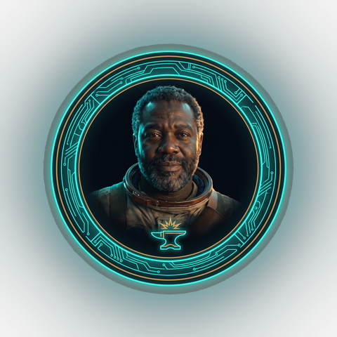
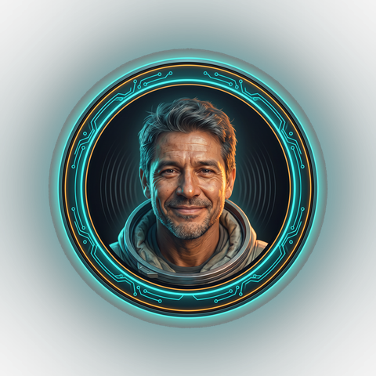
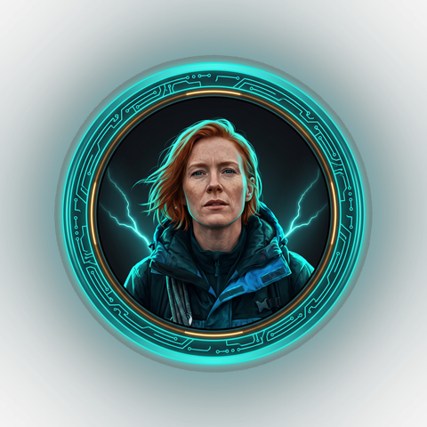
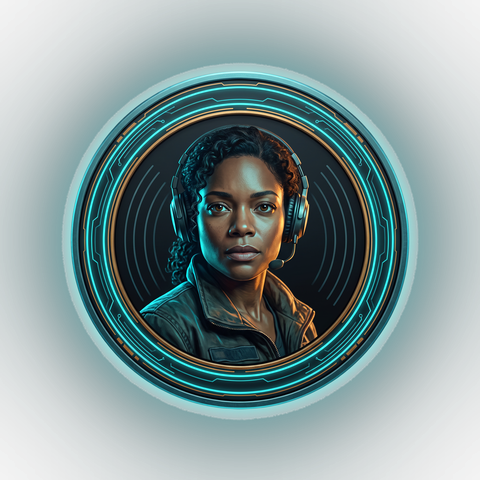
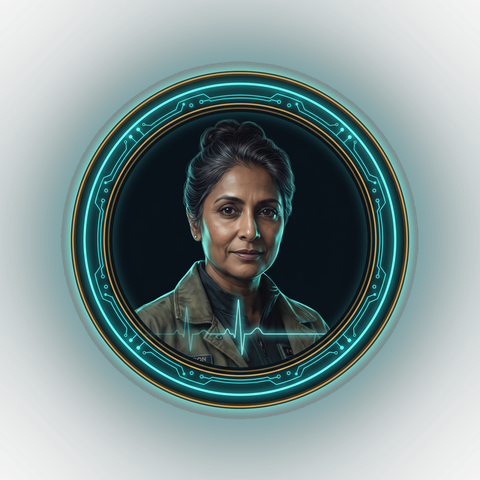
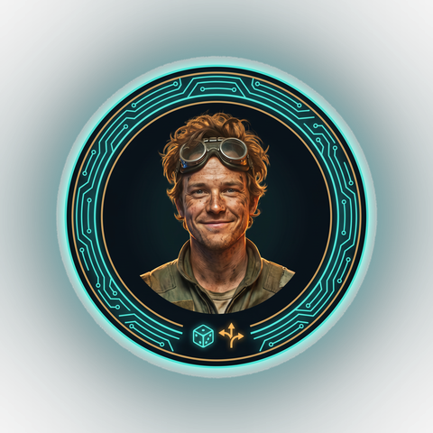
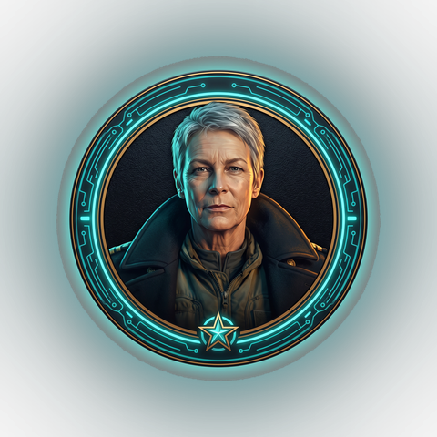
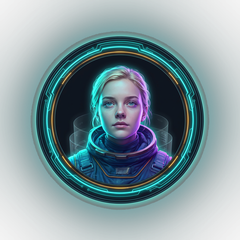
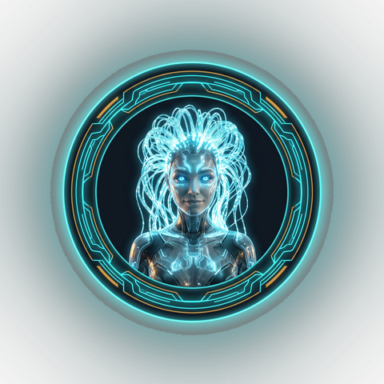
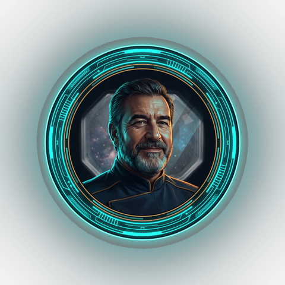
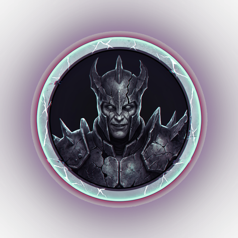
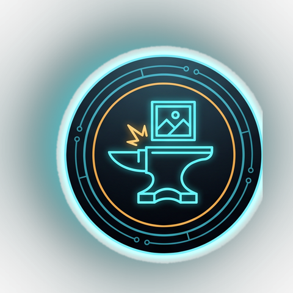
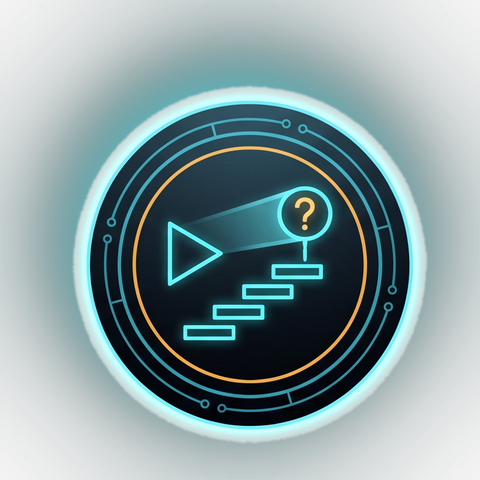
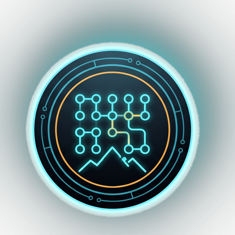
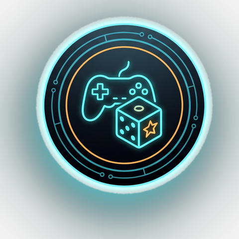
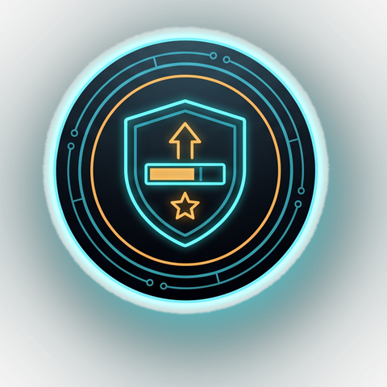
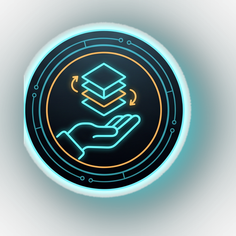
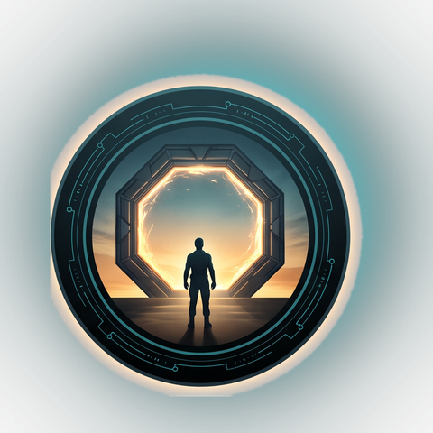
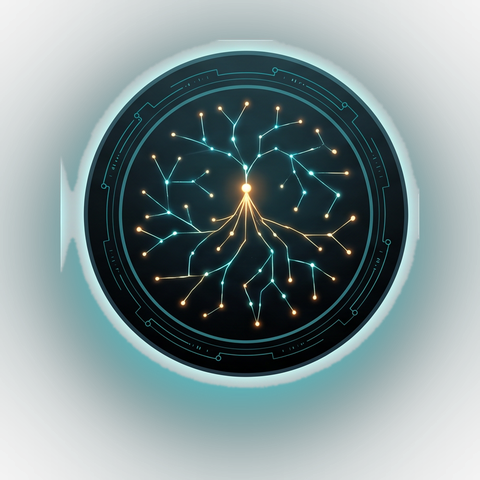
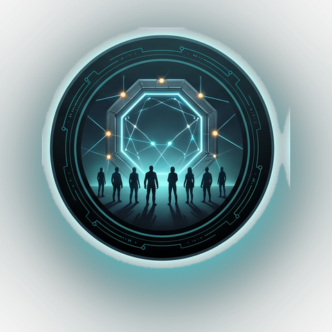
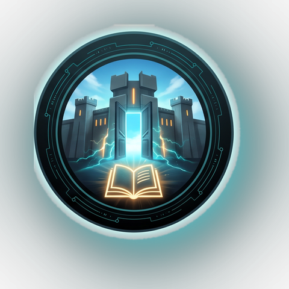
Los vídeos de la campaña (opening, capítulos de cada planeta, fragmentos y batalla final). Se enlazarán/incrustarán aquí desde el canal. En construcción.